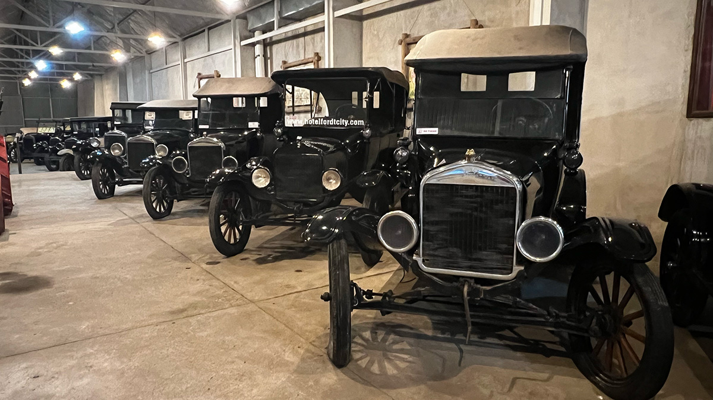
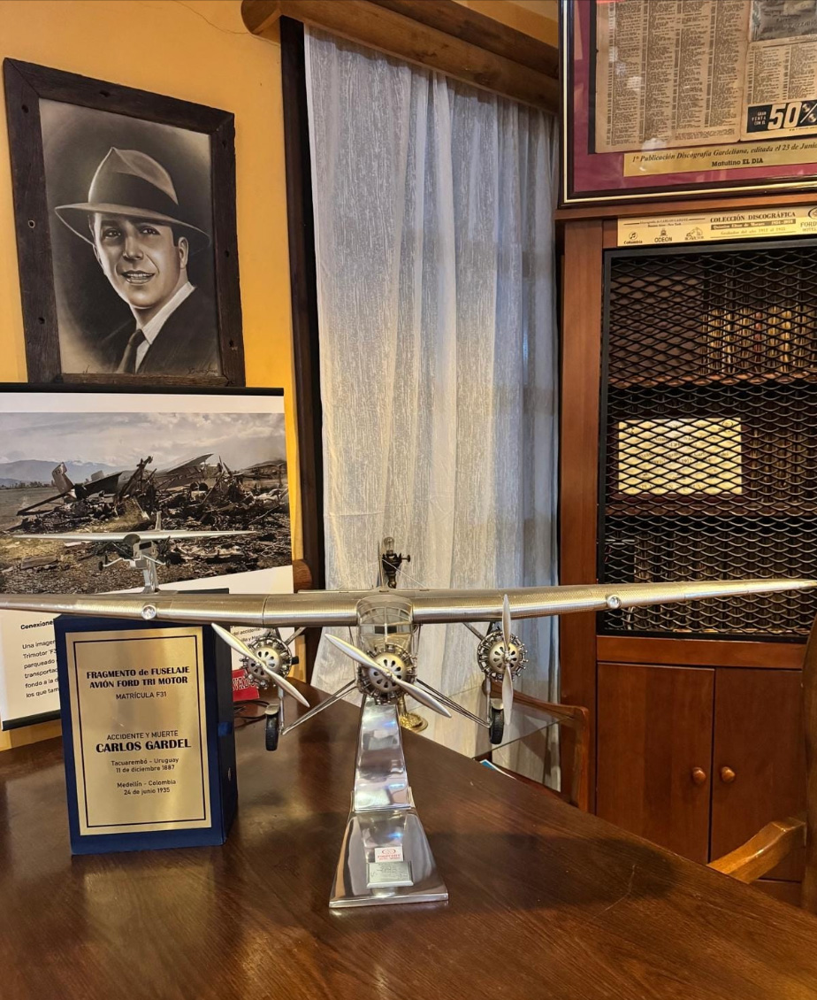
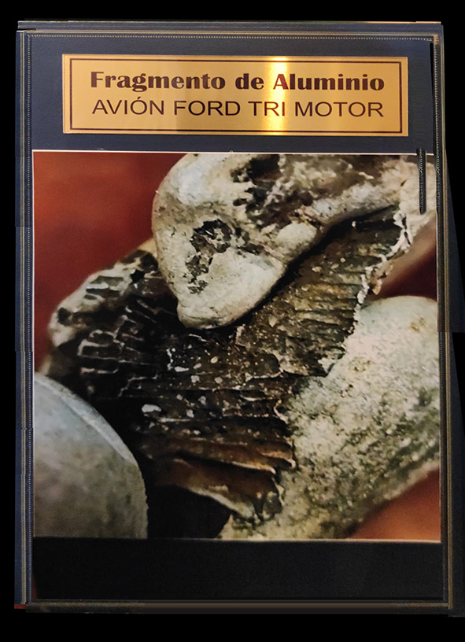
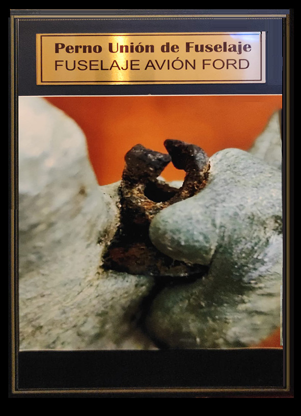

The Rivet and the Zorzal

Some stories defy oblivion. Some objects refuse to become scrap. This is one of them: the tale of a melted fragment from a doomed aircraft that crossed decades and borders to rest—silently and solemnly—inside a display case at the FordT City Hotel-Museum in Tacuarembó.
It is no ordinary artifact. It’s a piece charged with history, tragedy, longing, and mystery. As if that piece of metal still echoed the tango's melody and the roar of the aircraft that once held it. As if, in its metallic silence, it preserved Gardel’s voice.
In the very heart of Tacuarembó—a city steeped in history and tradition—stands a heritage treasure suspended in time: the FordT City Hotel-Museo. It’s not just a place to stay, but a true sanctuary of mechanical relics and musical memories. Walking through its doors, one doesn’t simply enter a building—one steps into an experience.
Visitors are greeted by an atmosphere scented with aged oil, polished wood, and leather worn by time. Inside its broad halls, flanked by gleaming glass displays, rests a remarkable collection of Ford Model T cars—pioneers of 20th-century mobility—painstakingly restored by the hotel’s owner, Eduardo Custodio.
But it’s not all cars. In a quiet corner stands an enviable collection of original Carlos Gardel records. The weathered album covers whisper melodies to those who draw near. Tangos that still beat, that still ache.
However, there is one display case that draws particular attention. It doesn't shine like the others, nor flaunt the chrome perfection of a vintage Ford. Inside sits a small, dark, unassuming object: a chunk of melted metal, no bigger than a hand. A small plaque beside it reads, “Fragment of the Ford Trimotor from Gardel’s crash, Medellín, 1935”.
Can something so small hold so much history? Can a shapeless, functionless fragment speak to us of a myth, a tragedy, a whole nation? This is the story of how that fragment traveled across time and a continent to find shelter in Tacuarembó. A story woven from voices, documents, serendipity, and passion.
The morning of June 24, 1935, dawned clear over Medellín. Sunlight lit up the green hills surrounding the modest but lively Olaya Herrera airfield. It seemed like an ordinary day, but inside the airport, anticipation hung thick in the air. Carlos Gardel—the continental idol, the “Zorzal Criollo”—was in town, midway through a triumphant Latin American tour. His mere presence summoned crowds.
Gardel had conquered theaters, phonographs, and the silver screen. He was a living legend. That day, he would board a Ford Trimotor—one of the most advanced aircraft of its time—along with his guitarists, colleagues, and show business partners.
At 2:53 p.m., the Trimotor taxied down the runway. Mere meters away, another SCADTA aircraft was preparing for takeoff. For reasons never fully clarified, both planes ended up on the same stretch of tarmac. The outcome was catastrophic: collision, fire, devastation. The voice of the Americas had been silenced in the flames.
The news spread swiftly. The tragedy shook an entire continent. Gardel—the man who sang like no other—was gone. And with him, a piece of Latin America's soul. But amid the smoldering wreckage, something endured…
For years, the crash became the subject of myths, speculation, and tributes. But among the scorched remains, a metal fragment survived—a melted, compact piece with irregular edges and a rivet still attached.
Hilario Pérez, a guitarist and collector, received the piece from a retired sailor, distantly related to the González family of Medellín. Hilario preserved it with quiet reverence until, in conversation with Eduardo Custodio, he realized its rightful place was the museum. Eager to verify its origins, Custodio delivered it to the Faculty of Engineering for analysis.
The tests confirmed it was a metal alloy consistent with those used in Ford Trimotors from the 1930s. The rivet matched those used in detachable fuselages. The silent fragment had begun to speak.
Hilario was no ordinary collector. He was a guardian of memory. His home was filled with shellac records, photos, and sheet music. When he received the piece, he understood it held more than just metal—it held time itself.
Years later, his meeting with Custodio forged a bond of trust. Hilario donated the piece, along with part of his collection, to the museum—on the condition that its story be preserved. And so, the melted rivet found a new destiny: a tangible witness to the past in the city of Gardel’s birth.
Science was the next chapter. At the University of the Republic’s materials lab, the fragment underwent meticulous testing. Alloy composition, rivet shape, signs of oxidation—all matched the specifications of the 1930s Ford Trimotor.
The results weren’t absolute, but they were compelling. Oral history met physical evidence. The piece was no longer just an article of faith—it became a metallic voice whispering, “I was there”.
Mauricio Umaña, an engineer and member of the Colombian Academy of Aviation History, had spent decades researching the crash. His book, The Truth About Gardel’s Death, revealed documents once censored by the Colombian government. His father, Alfonso Umaña, worked as a SCADTA radio operator. His maternal relatives—the Correas—were related to the González family of Medellín.
When Mauricio learned about the museum piece, he contacted Custodio. He verified the story, cross-referenced documents, maps, and aircraft schematics. His rigorous work added historical and technical weight to the artifact’s likely authenticity.
Thanks to him, the rivet became more than a remnant. It became a link between hidden documents, family memory, and scientific findings. A bridge between Medellín and Tacuarembó.
In a humble display case, under the soft glow of a carefully placed lamp, rests a melted piece of metal that could easily go unnoticed. It doesn’t shine. It lacks a distinctive form. But its story speaks louder than words.
That rivet—small and silent—has witnessed tragedy and reconstruction. It has crossed generations. It has united collectors, engineers, and historians. And now, it rests as a symbol of a living story.
Because Gardel still sings. In every shellac record. In every story Hilario shared. In every analysis Mauricio pursued. And in every visitor who, upon seeing that fragment, feels an inexplicable shiver.
That rivet—burned, scarred, nearly miraculous—didn’t just hold aircraft panels together. It binds memories. It spans continents. It bridges time. And that is why it sings. Soundlessly. But it sings.

To delve deeper into the metallurgical analysis and historical research that validates the authenticity of the piece, we provide the full report below.
© 2025 Ing. Mauricio Umaña Núñez. All Rights Reserved.
FordT City Hotel-Museum, Tacuarembó.